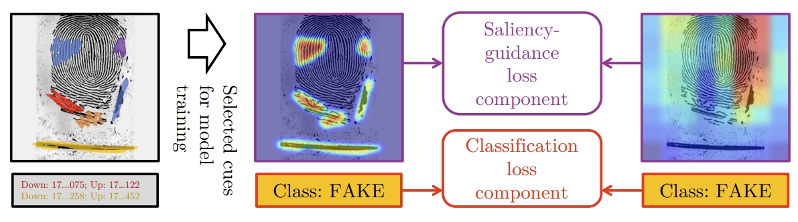
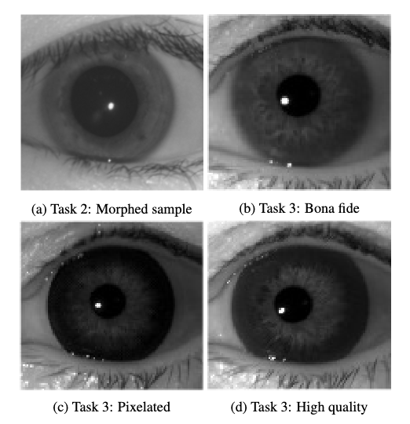
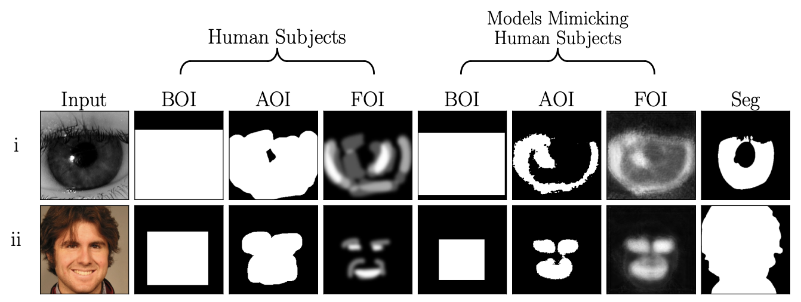

Abstract: Saliency-guided training, which directs model learning to important regions of images, has demonstrated generalization improvements across various biometric presentation attack detection (PAD) tasks. This paper presents its first application to fingerprint PAD. We conducted a 50-participant study to create a dataset of 800 human-annotated fingerprint perceptually-important maps, explored alongside algorithmically-generated "pseudosaliency," including minutiae-based, image quality-based, and autoencoder-based saliency maps. Evaluating on the 2021 Fingerprint Liveness Detection Competition testing set, we explore various configurations within five distinct training scenarios to assess the impact of saliency-guided training on accuracy and generalization. Our findings demonstrate the effectiveness of saliency-guided training for fingerprint PAD in both limited and large data contexts, and we present a configuration capable of earning the first place on the LivDet-2021 benchmark. Our results highlight saliency-guided training's promise for increased model generalization capabilities, its effectiveness when data is limited, and its potential to scale to larger datasets in fingerprint PAD. All collected saliency data and trained models are released with the paper to support reproducible research.
Abstract: LivDet-Iris 2025 is the sixth edition of the iris liveness detection competition. Held every two to three years, the competition aims to foster the development of robust algorithms capable of detecting a wide range of physically- and digitally-presented attacks in iris biometrics. The 2025 edition obtained the largest number of submissions in the history of the competition: ten algorithms from five institutions, and one commercial iris recognition system. LivDet-Iris 2025 also introduced new tasks compared to previous editions: (Task 1) a benchmark offered by an industry partner, (Task 2) morphed iris images, in which two different-identity samples were blended into one image, and (Task 3) evaluation of presentation attack detection robustness against advanced manufacturing techniques for textured contact lenses. This edition, for the first time in the series, offers a systematic testing of a commercial iris recognition system (software and hardware) using physical artifacts presented to the sensor. Dermalog-Iris team submitted algorithms that won all tasks, achieving the area under the ROC curve of 90.57%, 68.23% and 99.99% in tasks 1, 2, and 3, respectively. Additionally, we include results for baseline algorithms, based on modern deep convolutional neural networks and trained with all available public datasets of iris images representing bona fide samples and anomalies (physical attacks, eye diseases, post-mortem cases, and synthetically-generated iris images). Test samples created for tasks 2 and 3, and baseline models are made available to offer the state-of-the-art benchmark for iris liveness detection.


Abstract: Incorporating human-perceptual intelligence into model training has shown to increase the generalization capability of models in several difficult biometric tasks, such as presentation attack detection (PAD) and detection of synthetic samples. After the initial collection phase, human visual saliency (e.g., eye-tracking data, or handwritten annotations) can be integrated into model training through attention mechanisms, augmented training samples, or through human perception-related components of loss functions. Despite their successes, a vital, but seemingly neglected, aspect of any saliency-based training is the level of salience granularity (e.g., bounding boxes, single saliency maps, or saliency aggregated from multiple subjects) necessary to find a balance between reaping the full benefits of human saliency and the cost of its collection. In this paper, we explore several different levels of salience granularity and demonstrate that increased generalization capabilities of PAD and synthetic face detection can be achieved by using simple yet effective saliency post-processing techniques across several different CNNs.